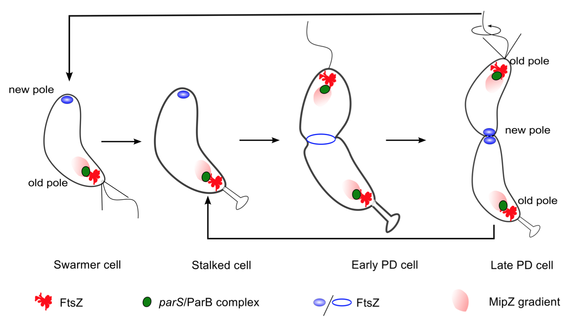
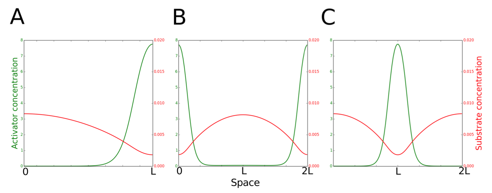
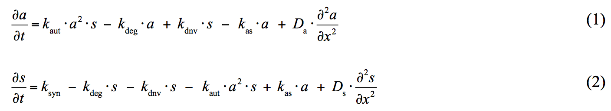
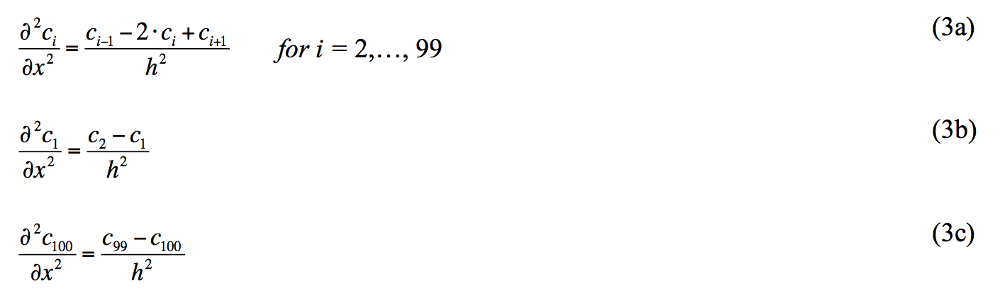

Physiology of protein localization in the Caulobacter cell cycle
In Caulobacter crescentus, a model organism for the study of protein localization [1], the polymer PopZ has been identified as a potential landmark protein [2,3]. PopZ localizes to the old pole of newborn cells, and then attains a second zone of polymerization at the new pole in predivisional cells (see Figure 4.1). One function of PopZ is to act as a scaffold tethering segregated chromosomes to the two poles of the cell [4]. As the chromosomes segregate to opposite poles of the cell, the cell division protein FtsZ (a tubulin homologue) polymerizes near the midpoint of the cell, at the future site of cell division. FtsZ polymerization at the correct time and place is a consequence of chromosome segregation. The moving chromosome front carries with it MipZ, a protein that promotes depolymerization of FtsZ [5,6]. As the replicated chromosomes segregate to opposite poles of the cell, the maximum concentration of MipZ localizes to the poles. Hence, the maximum concentration of FtsZ is found at the center of the cell, where MipZ concentration is lowest. Interestingly, the FtsZ peak is very sharp, much sharper than the drop off in MipZ would suggest.

Figure 4.1: Schematic representation of the dynamic localization of poteins during the Caulobacter crescentus cell cycle. PopZ polymer present at the old pole tethers the chromosome by docking the parS-ParB centromeric complex. Later in the cell cycle, PopZ polymer appears at the new pole, where it docks the newly replicated parS-ParB front. MipZ, which co-localizes with ParB, is a negative regulator of FtsZ polymerization. Hence, FtsZ, which promotes cell division, is always found to localize at the position in the cell that has the lowest concentration of MipZ.
While the dynamic localization of PopZ is clearly observed and its role in the cell cycle understood, the mechanism behind PopZ localization is still being investigated and debated. Any one or a combination of these mechanisms may be responsible for new-pole localization of PopZ; or it may be that none of them play a definitive role in PopZ localization. In this paper we argue that PopZ localization may depend on a Turing-type mechanism [7,8] by comparing the predictions of a mathematical model to well established properties of PopZ patterns. We also propose that the sharp FtsZ band at the site of cell division is a consequence of a Turing-type mechanism of self-activating assembly and focusing. Our final model of the PopZ-MipZ-FtsZ interaction network will be formulated as a set of partial differential equations and solved using the Method of Lines (Methods). Simulations of the model reproduce experimentally observed spatiotemporal distributions of these proteins during the cell cycle of wild-type and mutant Caulobacter cells.
Spatiotemporal dynamics of Turing patterns
Turing models are best known for explaining patterns that are periodic in space [7,8]. The theory of Turing patterns predicts that stable, stationary patterns can be generated for a two-species system if two conditions are satisfied: one species must be self-activating and slow diffusing, while the other species must diffuse significantly faster and have an inhibitory effect on the self-activating species. In the Activator-Inhibitor Production (A-IP) version of Turing's mechanism, the initial patch of activator forms by chance, followed by local production of inhibitor molecules, which diffuse rapidly away from the activator patch and inhibit production of activator in the surrounding region [9-11]. At some distance away, the inhibitor concentration is low enough to permit a new zone of activator self-amplified accumulation. An alternative version of the scheme is the Activator-Substrate Depletion (A-SD) mechanism, where a substrate is converted to product by an autocatalytic reaction [10,11]. Local accumulation of the self-activating product depletes surrounding regions of the rapidly diffusing substrate. Only some distance away will substrate concentration be large enough to support a new zone of product accumulation. This critical distance between activator peaks (where inhibitor concentration is low enough or substrate concentration is high enough) is the characteristic wavelength, λ0, of a Turing pattern (Figure 4.2).

Figure 4.2: Two scenarios for the function of PleC (kinase or phosphatase) in the early predivisional (PD) cell. Spatiotemporal dynamics of PleC (green) and DivL (dark blue) during the cell cycle under these two scenarios.
Method
We model Turing patterns in one spatial dimension x, by RDEs for activator concentration a(x,t) and substrate concentration s(x,t):

The "classical Geirer-Meinhardt" equations lack the terms kdnv•s and kas•a, which correspond to de novo synthesis of activator (polymer) from substrate (monomer) and to dissociation of polymer into monomers. We solve the RDEs (1-2) in one spatial dimension, by the method of lines [12]. That is, we discretize the spatial dimension into n compartments (n = 100) of length h = L/n, and approximate it by a central difference scheme (Eq. 3a). We implement no-flux boundary conditions as described in Eq. (3b,c). (In these equations, ci represents the concentration of either activator or substrate in compartment i.)

The resulting 2n+1 ordinary differential equations are solved using MATLAB's ode15s solver.
Reference
- Goley ED, Iniesta AA, Shapiro L (2007) Cell cycle regulation in Caulobacter: location, location, location. J Cell Sci 120: 3501-3507.
- Ebersbach G, Briegel A, Jensen GJ, Jacobs-Wagner C (2008) A self-associating protein critical for chromosome attachment, division, and polar organization in caulobacter. Cell 134: 956-968.
- Bowman GR, Comolli LR, Zhu J, Eckart M, Koenig M, et al. (2008) A polymeric protein anchors the chromosomal origin/ParB complex at a bacterial cell pole. Cell 134: 945-955.
- Bowman GR, Comolli LR, Gaietta GM, Fero M, Hong S-H, et al. (2010) Caulobacter PopZ forms a polar subdomain dictating sequential changes in pole composition and function. Mol Microbiol 76: 173-189.
- Thanbichler M, Shapiro L (2006) MipZ, a spatial regulator coordinating chromosome segregation with cell division in Caulobacter. Cell 126: 147-162.
- Kiekebusch D, Michie KA, Essen LO, Lowe J, Thanbichler M (2012) Localized Dimerization and Nucleoid Binding Drive Gradient Formation by the Bacterial Cell Division Inhibitor MipZ. Mol Cell 46: 245-259.
- Turing AM (1952) The Chemical Basis of Morphogenesis. Philos Trans R Soc B Biol Sci 237: 37-72.
- Kondo S, Miura T (2010) Reaction-diffusion model as a framework for understanding biological pattern formation. Science 329: 1616-1620.
- Gierer A, Meinhardt H (1972) A theory of biological pattern formation. Kybernetik 12: 30-39.
- Meinhardt H, Gierer A (2000) Pattern formation by local self-activation and lateral inhibition. Bioessays 22: 753-760.
- Meinhardt H (1982) Models of biological pattern formation. Research Gate. pp. 1-10.
- Schiesser WE (1991) The Numerical method of lines. Academic Press.
 webmaster
webmaster